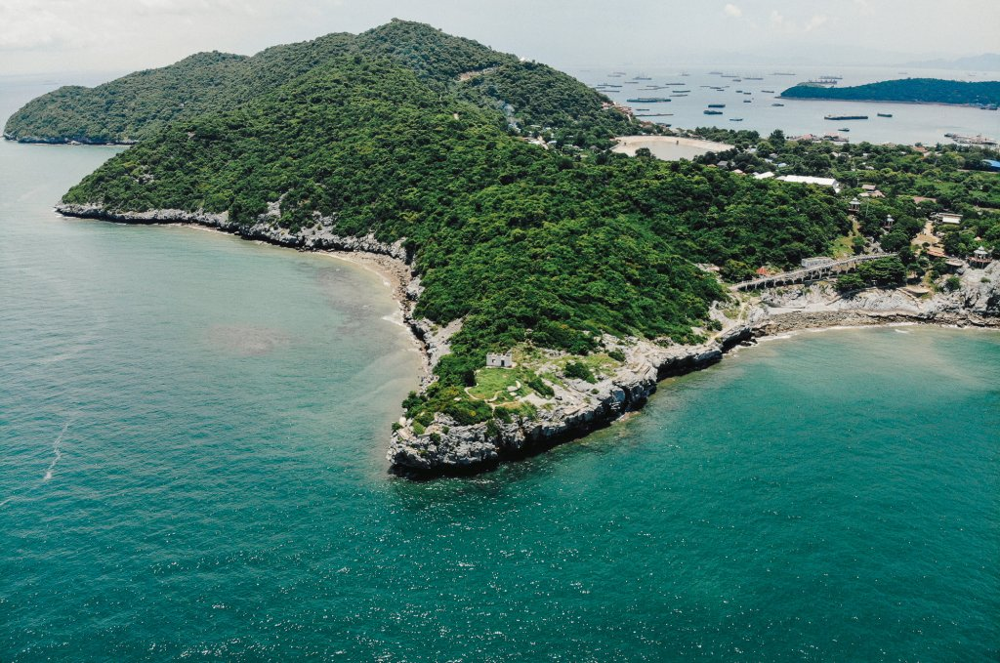

5 PLACES

1.) เกาะสีชัง เป็นเกาะที่ตั้งอยู่ในจังหวัดชลบุรี มีธรรมชาติสวยงามและประวัติศาสตร์ที่น่าสนใจ สถานที่ท่องเที่ยวหลัก ได้แก่ พระจุฑาธุชราชฐาน, หาดถ้ำพัง, และจุดชมวิวต่างๆ บรรยากาศเงียบสงบ เหมาะสำหรับการพักผ่อนและเที่ยวชมสถานที่ทางประวัติศาสตร์